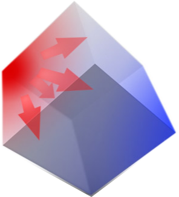
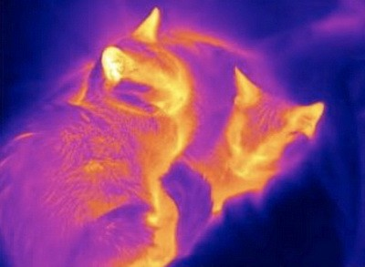

Физические основы теплоэнергетики
Для начала нужно сказать о двух основных законах, о которых нужно помнить всегда, когда речь идет о тепловой энергии. Первое начало термодинамики или закон сохранения энергии, по простому энергия не может взяться из неоткуда или испариться, она всегда возникает из-за какого то процесса, а потом превращается в другие свои виды. Например, если взять в руки молоток и ударить его об пол мы совершим механическую работу, на которую потратим энергию. Когда пол остановит молоток, то эта энергия превратится в теплоту. И точно также теплоту можно преобразовать в другие виды. Именно так делают на тепловых и атомных электрических странциях, где теплоту преобразуют в электричество. Второе начало термодинамики определяет в каком направлении движется теплота. В натуральных условиях теплота всегда идет от горячего тела к холодному. Еще раз, если ничего не делать и просто соприкоснуть горячее с холодным, теплота самопроизвольно пойдет к холодному от горячего. Но существуют приборы, которые делают так, чтобы теплота переходила от холодного к горячему.
Далее необходимо сказать о механизмах теплообмена:
- Теплопроводность 
- Конвекция
- Свободная или естественная
- Вынужденная


- Тепловое излучение 
Теплопроводность
Самым простым механизмом как в понимании, так и в физическом описании является теплопроводность. Это явление возникает в телах любого агрегатного состояния, но большую значимость имеет только в твердых телах. Зависит от свойств материала объекта и температуры с одной стороны и другой. Нагревая тело, увеличивается кинетическая энергия молекул (они быстрее начинаю двигаться). С большой скоростью одни молекулы сталкиваются с другими, передавая часть энергии и так далее во всех направления тела. На примере приведенной картинки с кубом видно, как этот процесс протекает.
Конвекция
Конвекция - процесс переноса теплоты вместе с массой. Например, нагретый воздух, который поднимается вверх от каких то теплых объектов, а холодный вниз. Более сложное физическое явление. Интенсивность этого процесса тоже зависит от свойств тела и температуры, но также от размеров объектов, того, как она расположены вертикально или горизонтально, близко или далеко. В общем это можно назвать конфигурацией пространства. Бывает свободная конвекция и вынужденная. По картинкам понятно, что одна протекает в своем собственном темпе, а вынужденная в темпе, который определяется оборудованием, например, скоростью вращения винта вентилятора.
Излучение
И последний механизм самый сложный, особенно в формулах. Как я говорил раньше, молекулы сталкиваются, при этом часть энергии превращается в электромагнитные волны, которые в сумме дадут излучение. Самый простой и понятный пример - раскаленные металлы. При высоких температурах они начинают светиться, это и называется излучением. Излучать могут не только твердые вещества, но и газы. Пламя от костра - это нагретый до высоких температур дым, частички которого светятся. При этом такое состояние вещества называют плазмой.
Теплообменное оборудование
Теплообменник - это металлическая коробка либо с множеством трубок внутри (поверхностный), либо без них (смешивающий). Соответственно теплота в поверхностных теплообменниках передается через поверхность труб, то есть реализуется 2-3 механизма теплообмена: конвекция от жидкости к поверхности труб; теплопроводность; конвекция от поверхности труб к жидкости внутри. Тепловое излучение может быть как от жидкостей к трубам так и наоборот, в зависимости от того куда передаем теплоту. В смешивающем теплообменнике горячая и холодная среда перемешиваются и тем самым обмениваются теплотой.
Технологическое назначение определяет название теплообменника. Для конденсирования пара - конденсатор, для передачи теплота от сжигания топлива к жидкости - котел, для нагрева воды в квартире - бойлер и т.д. Даже холодильники являются своего рода теплообменниками, воздух внутри камеры, где хранится еда, является горячим
Процесс производства электро- и тепловой энергии

Основное оборудование на тепловых электрических стация:
- Котел
- Перегреватель
- Турбина
- Электрогенератор
- Конденсатор
- Насос основного конденсата
- Подогреватели конденсата
- Насос питательной воды
В котле 1 сжигают топливо (природный газ, мазут, уголь) для превращения воды в пар и его перегрева. С высокими значениями давления и температуры пар поступает в турбину 2. Пар расширяется, давит на лопатки турбины и начинает ее крутить. Турбина соединена с электрогенератором 4. Генератор имеет две основные части: статор и ротор. Ротор вращается вместе с турбиной, а его взаимодействие со статором генерирует электричество. Большая часть пара идет в конденсатор 5, где полностью превращается в воду. Насос 6 перекачивает данный конденсат до теплообменника 7. Другая часть пара отбирается в процессе расширения в турбине для нагрева конденсата. Таким образом повышается экономичность станции. При смешении этих частей получается питательная вода для котла. Насос 8 докачивает питательную воду до котла. Цикл завершен. Для отопления и горячей воды ставят еще один теплообменник подобно 7 и также подводят пар к нему для нагрева той воды, которая циркулирет в магистралях (сетевая вода). Или используют конденсатор, в роли сетевого теплообменника.